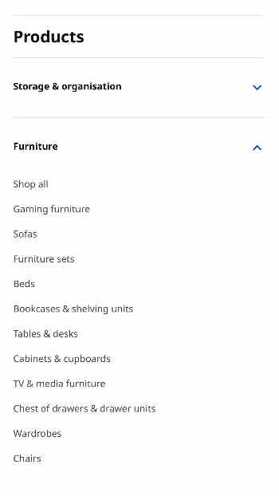

Hick’s Law
IKEA
ikea.com Ikea's website shows an example of the concept proposed in Hick’s Law. Hick’s Law mentions the idea that when we have more choices to select, the more time we take to make a decision. This concept applies to websites, and because of that, to develop a better website it's necessary to create a way to decrease the possible options to select. By doing that, it will be easier for individuals to make a decision and remain using the website.
On the website, it can be seen how in its design process it developed a way to discard options that could be distracting. They did that by applying filters for their different products. At the same time, they made those filters more specific by allowing the user to sort them by different categories, and filter them based on specific characteristics such as color and price. Those filters help to accelerate and facilitate the decision-making process and make the website easier to use.
Alignment
Codecademy
codecademy.comAlignment is an important element to apply to a website. Applying it implies that the elements on the website should be aligned with one another. Thus, its elements have a sense of structure that helps improve the appearance of the website. Those characteristics and more can be seen in the example from Codecademy.
The picture below shows how all its elements are well aligned horizontally. It also shows that while developing the page, its designers took into account the fact that in English-speaking countries people read from left to right, by applying left alignment. By applying those elements a sense of unity and connection between the image elements can be perceived. Due to that, the page looks better organized, and it's easier to contemplate.
Visual Hierarchy
UX Engineer
uxengineer.comVisual hierarchy is a critical element to consider while creating a webpage. An important aspect to have in mind while describing this concept is the order in which humans see things. Our eyes catch certain things first then others in dependence on different variables. That's relevant because based on that, and the importance one wants to give to each element of a website, different design principles are applied.
UX Engineer provides a great example of how visual hierarchy is applied. In the image, it can be seen how the "email" and "subscribe" buttons stand out, especially the second one that it's more distinguishable due to the color choice that was applied to it. It's noticeable how the title it's the next thing that catches the eye due to its size. After that, the next thing to see in order of importance is the text below the title which is smaller in comparison. The less important things such as the message below the subscribe button are smaller and less eye-catching.